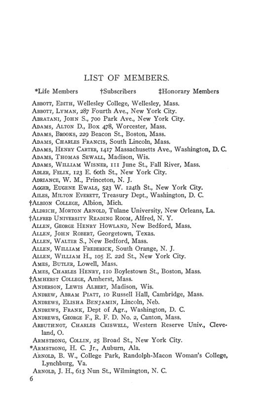

O manual de 1908: 1.002 sócios, anuidades em queda e um boletim
Leitura: 4 min
O manual de 1908 traz o estatuto, a lista de sócios e as atas de Madison: menos sócios pagantes, o primeiro investimento em títulos e um novo editor para o boletim.


Em 28 de dezembro de 1907, em Madison, o secretário W. M. Daniels informou que uma revisão rigorosa do cadastro reduzira a associação a 1.002 sócios e assinantes. Um ano antes, eram 1.040. A queda vinha sobretudo da exclusão de quem estava com cinco anos ou mais de anuidades atrasadas.
Os números estão no Hand Book of the American Economic Association de fevereiro de 1908, suplemento do nº 1 do vol. 9 da terceira série. A estrutura repete a do manual de 1907, comentado no nº 84: propósitos da associação, estatuto, lista de sócios e atas da vigésima reunião anual. Na folha de rosto, o título ainda é Publications of the American Economic Association, terceira série, “issued quarterly”; o próprio manual lembra que a série trimestral começou em 1900. É a partir deste volume que o acervo digital passa a catalogá-la como American Economic Association Quarterly. Por isso o Arquivo, que nos nº 1 a 86 cobriu as Publications de 1886 a 1907, muda aqui de título.
Por que as anuidades caíam?
O relatório do tesoureiro dá a série de quatro anos: as anuidades renderam US$ 2.340 em 1904 e US$ 1.842,60 em 1907. Daniels calcula que, em média, mais de cinquenta sócios por ano deixaram de pagar nos três últimos anos, apesar das cobranças. Aponta duas causas prováveis: a multiplicação de outras organizações com objetivos parecidos e o corte nos orçamentos de quem vivia de salário fixo, num período de alta do custo de vida.
A reserva, até então depositada a juros numa trust company de Nova York e num banco de Ithaca, passou a títulos: por ordem do Comitê Executivo, US$ 3.000 de valor de face em títulos da cidade de Nova York com vencimento em 1917. O tesoureiro repete que acumular excedente não é tarefa de uma associação científica e propõe duas economias: concentrar a administração financeira num só escritório, com a associação como editora de si mesma, e talvez contratar um subsecretário assalariado.
O que se decidiu em Madison?
O boletim trimestral, aprovado no ano anterior, trocou de editor: C. W. A. Veditz foi liberado a pedido e o Comitê Executivo escolheu E. W. Kemmerer, de Cornell. O teto de US$ 1.200 por ano para o boletim caiu, e o gasto passou ao critério do Comitê Executivo. A associação aprovou a proposta de C. B. Fillebrown de um comitê de até doze membros para buscar acordo sobre definições de termos e princípios econômicos. A cooperação com a American Statistical Association foi considerada impraticável naquele momento. Atlantic City ficou como sede de 1908, e Simon N. Patten foi eleito presidente.
Os trabalhos apresentados em Madison, de “Are Savings Income?”, de Irving Fisher, ao discurso presidencial de Jeremiah W. Jenks sobre o controle estatal dos negócios, estão comentados no nº 88.
Na minha leitura
Na minha leitura, o manual de 1908 mostra uma associação que trata o caixa como problema de gestão, e não de acumulação. A receita principal encolhe, e a resposta não é cortar a atividade, mas aplicar a reserva a juros, cortar custos de intermediação e apostar no boletim como forma de recuperar sócios. É uma aposta em que a despesa nova deve gerar a receita futura, com o risco evidente de que a queda das anuidades continue.
Glossário
- Assinante (subscriber)
- instituição ou pessoa que recebe as publicações sem ser sócia, como as bibliotecas.
- Valor de face (par value)
- valor nominal de um título, que pode diferir do preço pago por ele.
- Comitê Executivo
- órgão que cuida dos interesses da associação entre as reuniões anuais.
Artigos desta edição
- American Economic Association — texto institucional (pp. 1–2). Apresenta a associação como reunião de professores, homens de negócios, jornalistas, advogados e políticos interessados em economia, com quase duzentos assinantes, entre eles as principais bibliotecas do país. Resume o histórico das publicações desde março de 1886 e da série trimestral iniciada em 1900, lembra as reuniões conjuntas com a American Historical Association e anuncia Atlantic City para 1908 e o boletim de bibliografia e notas para o ano corrente. Reafirma que a associação não é órgão de partido, seita ou instituição. JSTOR
- Constitution of the American Economic Association — texto revisto na reunião anual de dezembro de 1905 (pp. 3–5). Mesmo texto dos manuais anteriores: incentivo à pesquisa econômica, em especial ao estudo histórico e estatístico das condições reais da vida industrial, publicações e plena liberdade de discussão, sem posição partidária. Anuidade de três dólares, contribuição vitalícia de cinquenta e até 25 sócios honorários estrangeiros. JSTOR
- List of Members (pp. 6–30). Relação alfabética de sócios e assinantes, com endereços e sinais para sócios vitalícios, assinantes e honorários. Professores, funcionários públicos, profissionais liberais, faculdades e bibliotecas aparecem lado a lado. JSTOR
- The Twentieth Annual Meeting — atas; relatórios de W. M. Daniels (pp. 31–49). Atas da reunião de Madison, de 28 a 31 de dezembro de 1907, sob os auspícios da Universidade de Wisconsin e ao lado das associações de história, ciência política, sociologia e legislação do trabalho: lista de presença, programa, relatórios do secretário e do tesoureiro, o parecer da comissão de auditoria, a troca de editor do boletim, a escolha de Atlantic City para 1908 e a eleição de Simon N. Patten para a presidência. Os trabalhos apresentados estão comentados no nº 88. JSTOR
Fontes
- American Economic Association (pp. 1–2). JSTOR · Internet Archive (PDF)
- Constitution of the American Economic Association (pp. 3–5). JSTOR · Internet Archive (PDF)
- List of Members (pp. 6–30). JSTOR · Internet Archive (PDF)
- The Twentieth Annual Meeting (pp. 31–49). JSTOR · Internet Archive (PDF)
- Sumário da edição no JSTOR: American Economic Association Quarterly, 3ª série, vol. 9, nº 1 (suplemento).
Documento em domínio público (EUA, publicado antes de 1931), via JSTOR Early Journal Content e Internet Archive. Resumo e comentário do autor deste site, sem afiliação com a American Economic Association. Encontrou um erro? Escreva: a correção é publicada no próprio texto, com data.
← Nº 86 · Watkins, 1907: de onde vêm as grandes fortunas Nº 88 · Madison, 1907: o pânico, o Tesouro e o que conta como renda →